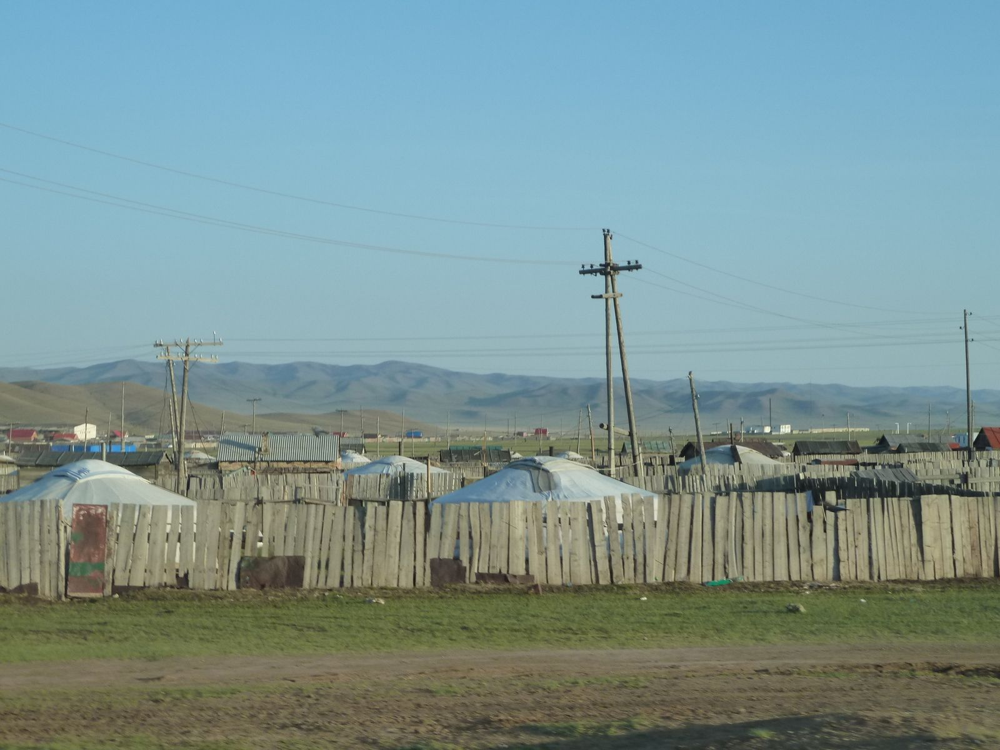
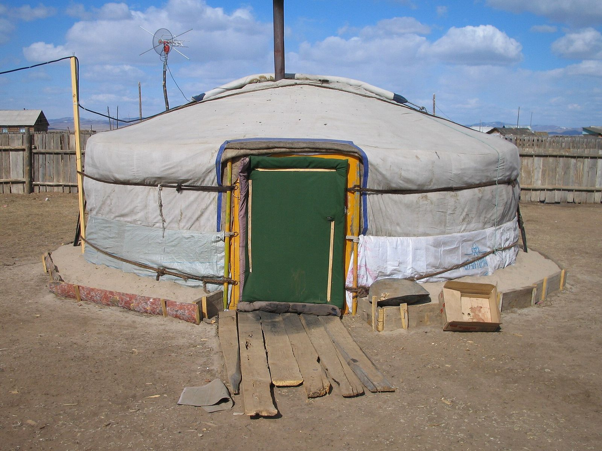
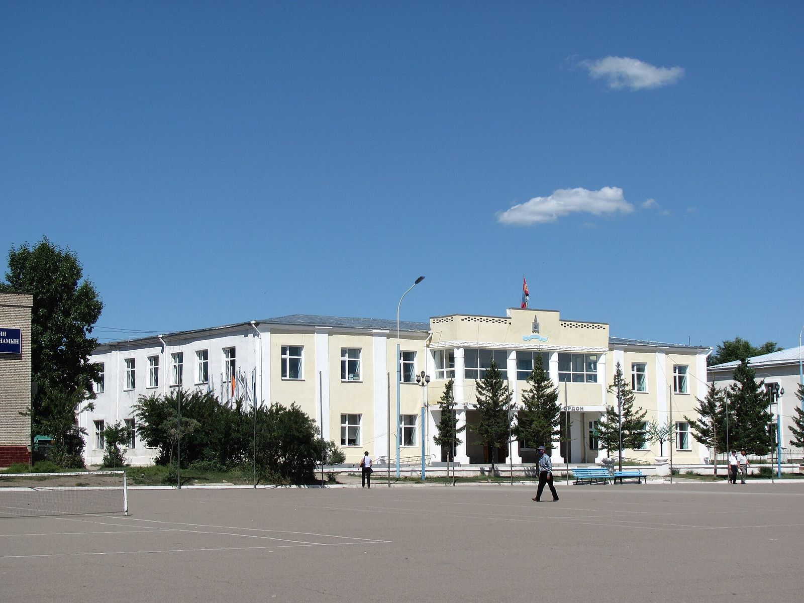

Хийсэн ажил
Энэ хуудсанд зөвхөн олон нийтийн эх сурвалжид баримтлагдсан, шалгаж болох үйл ажиллагааг оруулсан. Бид баталгаажаагүй мэдээлэл оруулахгүй.

2023 оны 12 дугаар сар
«Хөгжлийн бэрхшээл ба тэгш хүртээмж» чуулга уулзалт
Зуунмод хотноо зохион байгуулагдсан уг чуулга уулзалтыг Төв аймгийн Засаг даргын тамгын газрын Нийгмийн бодлогын хэлтэс, аймгийн холбогдох байгууллагууд, Залуучуудын хөгжлийн төв, Дэлхийн зөн орон нутгийн хөтөлбөр болон манай холбоо хамтран зохион байгуулсан.
24 сумын 238 иргэн, хөгжлийн бэрхшээлтэй хүүхэд, залуучууд болон тэдний асран хамгаалагчид оролцсон. Уулзалтын зорилго нь хөгжлийн бэрхшээлтэй хүүхэд, залуучуудын эрхийг хамгаалах, нийгмийн оролцоог нэмэгдүүлэх, тулгамдаж буй асуудлыг сонсож, шийдвэрлэх арга замыг хамтдаа хэлэлцэх байв.
Эх сурвалж: МОНЦАМЭ, 2023.12.01

2023 оны 7 дугаар сар
«Аз жаргалын өргөө» төвд үйл ажиллагаа явуулж эхэлсэн
Аймаг байгуулагдсаны 100 жилийн ойг тохиолдуулан хөгжлийн бэрхшээлтэй иргэдэд зориулсан «Аз жаргалын өргөө» төв нээгдсэн. Уг төвийг Засаг даргын санаачилгаар «Холт интернэйшнл» олон улсын байгууллагатай хамтран тохижуулсан бөгөөд манай холбоо төвд үйл ажиллагааны байртай.
Төв нь дараах зүйлээр тоноглогдсон:
- Хурлын өрөө
- Чийрэгжүүлэлтийн өрөө
- Бариа заслын өрөө
- Амрах байр
- Хараагүйчүүдийн холбооны байр
- Хөгжлийн бэрхшээлтэй иргэдийн холбооны байр (манай байгууллага)
- Иргэдийн үйлдвэрлэсэн бүтээгдэхүүний борлуулах цэг
- Ариун цэврийн өрөө, душ
Эх сурвалж: МОНЦАМЭ / Show Mongolia, 2023.07.26
